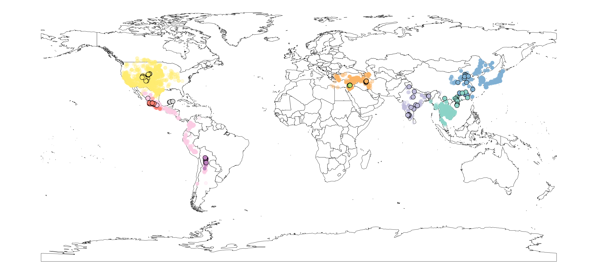

Miguel de Celis
Harnessing Microbiomes to Enhance Biological Processes
Microorganisms are vital for several biological processes that underpin our society. They enhance agriculture through plant-soil interactions, drive food fermentations, and play a key role in wastewater treatment. Studying the ecology of these systems allows us to enhance said processes, addressing environmental challenges, and contributing to a more sustainable society.
Plant Associated Microbiomes
The MICROWILD network aims to address how domestication has changed the plant microbiome of major crops for global agriculture. This knowledge is needed to optimize the interactions between plants and microbial communities occurring in the rhizosphere, which is crucial to increase global food production and its resilience to climate change. 
- We identified a common soil core microbiome among wild progenitors, which created unique microhabitats within ecoregions that strongly influenced the soil community assembly, indicating specific co-evolutionary interactions (Fernández-Alonso et al. 2023).
- Despite the distinct soil microbiomes and functions among wild progenitors, we identified common trends in rhizosphere influence, generally higher on abundant taxa with strong implications in multifunctionality (de Celis et al. 2024).
Wine Yeast Communities

Applying a microbial ecology perspective, we aim to unravel the distinctive role of key microbial players in wine fermentations and understand their interactions within the community and with the environment. Leveraging advanced multi-omics approaches, we explore the rich diversity of wine yeasts (de Celis et al. 2019, 2022; Belda et al. 2021; Ruiz et al. 2021, shedding light on the importance of the yeast-yeast interactions in shaping wine flavor (Ruiz et al. 2020).
Moving forward, we examine the contribution of individual wine yeast strains the overall wine composition, a crucial step in managing microbial processes with biotechnological applications (Ruiz et al. 2023). Deciphering the molecular determinants governing individual contribution of yeasts to wine composition not only enhances our understanding but also guides targeted improvements of wine quality (de Celis et al. 2023).
Once the complexity of wine communities, the relevance of yeast-yeast interactions and their individual contributions to wine composition are sufficiently understood, it is an exciting idea to explore the use of a synthetic Saccharomyces chassis for the construction of a synthetic yeast with genes covering the ecological functions observed in multi-species spontaneous wine fermentations (Belda et al. 2021).
Waste Water Treatment Plants
The operation of Wastewater Treatment Plants (WWTP) depends on the activity of the microbial community for the degradation of organic matter and nutrients present in the wastewater. Our work deepens the knowledge of microbial dynamics within bioreactors, studying the patterns of microbial assembly and succession (de Celis et al. 2020, 2022), and advancing the development of methodologies for monitoring the stability of the communities and the correct WWTP operation. We further identify microbial associations and their ecological implications occurring during granule development in specific bioreactor settings, especially those involving inter-kingdom interactions (de Celis et al, 2024).
Combining classical microbiology and NGS techniques we identify the most promising tools to reduce biofouling issues in WWTPs, such as the use of quorum quenching enzymes that inhibit biofilm formation (de Celis et al. 2021) or metallic nanoparticles with limited effectiveness (de Celis et al. 2022).